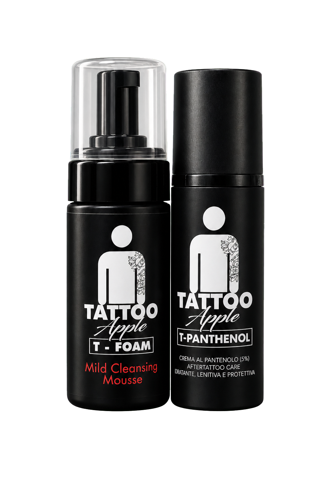
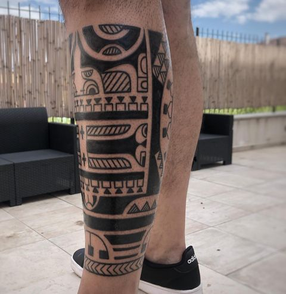
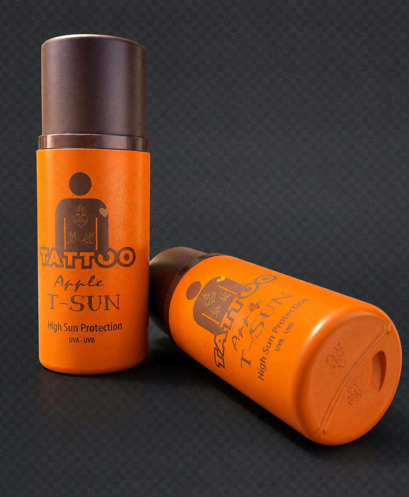

Progetto tribale
Diventa la tua corazza.
Ogni progetto tribale nasce direttamente dalla tua forma muscolare e anatomica. Ti rende fiero di cio che sei: un uomo, un guerriero.

Scroll
 01
Portfolio
→
02
Artisti
→
01
Portfolio
→
02
Artisti
→
 03
Collaboratori
→
03
Collaboratori
→

04 Cura →Respect Tattoo Art
A Nova Siri, Maurizio D'Alessandro costruisce progetti tribali freehand direttamente sull'anatomia: linee Maori, Polinesiane, Samoane e Marchesiane diventano struttura, presenza e identita personale.
Portfolio
Ogni progetto tribale nasce direttamente dalla tua forma muscolare e anatomica. Ti rende fiero di cio che sei: un uomo, un guerriero.



Artisti
Formatosi all'Accademia di Belle Arti di Napoli, ha dedicato una tesi in Antropologia culturale al tatuaggio. La sua ricerca unisce anatomia, simboli e identita: il disegno non viene appoggiato sulla pelle, viene costruito sul corpo.
Sick Ones Mattia Lost
Mattia Lost Lori Bufano
Lori Bufano Giamba
Giamba PhilodinkiostroSick OnesMattia LostLori BufanoGiambaPhilodinkiostro
PhilodinkiostroSick OnesMattia LostLori BufanoGiambaPhilodinkiostroCura del tattoo
Lava con mani pulite, acqua tiepida e detergente delicato. Tampona senza sfregare.
La pelle deve restare libera, asciutta e calma. Evita tessuti stretti e umidita.
Applica poca crema. Niente sole diretto, mare, piscina o lampade durante la guarigione.

Protezione alta per i mesi caldi e per la pelle tatuata piu esposta.
T-FOAM deterge. T-PANTHENOL calma e sostiene la pelle durante la guarigione.
Eventi

Guest spot, appuntamenti dedicati e progetti tribali programmati tra Nova Siri e il circuito Macko.
Sessioni guest e progetti su richiesta.
Appuntamenti periodici nel circuito Macko.
Studio principale per consulenze e percorsi completi.
Contatti
Scrivi zona del corpo, dimensione indicativa e idea. Maurizio valuta il progetto e ti risponde con il percorso piu adatto.